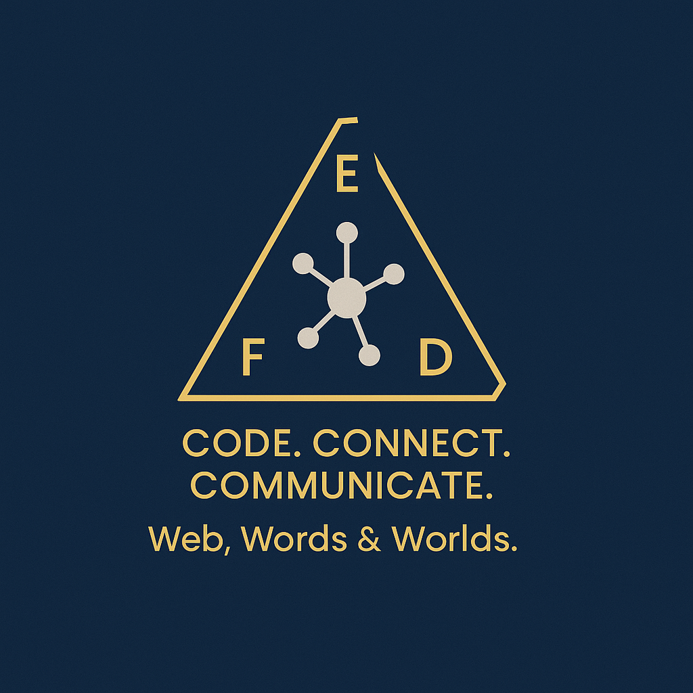

Projekty
- englishandrej.sk – Oficiálna stránka lektora jazykov (HTML, CSS, JS, PHP)
- Should you interview Andre? 😉 React quiz app
- kubikovci.englishandrej.sk🾠– Web pre veterinu a chovateľské potreby
- Cocktail App – Frontend appka na miešanie koktailov podľa surovÃn 🍹
- Aj táto landing stránka, mimochodom 😉
O mne
🗓️ S programovanÃm som začal už ako pokročilý podnikateľ v jazykovom priemysle, pričom som nadviazal na silné zázemie v jazykovom vzdelávanà a preklade. Dnes dokážem vytvárať vizuálne pútavé webové stránky a front-end aplikácie pomocou HTML, CSS, JavaScript, s podporou nástrojov ako VS code a DALL·E. Bavà ma premieňať nápady na čisté a na užÃvateľa zamerané digitálne zážitky. Moje predchádzajúce skúsenosti s digitálnym marketingom — vrátane Google Ads a Google Analytics — mi pomáhajú uvažovať nielen v pojmoch UI, ale aj UX, konverzià a správania použÃvateľov.